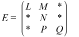
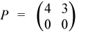

The Intel® oneAPI Math Kernel Library block compressed sparse row (BSR) format for sparse matrices is specified by four arrays:values, columns, pointerB, and pointerE. The following table describes these arrays.
- values
A real array that contains the elements of the non-zero blocks of a sparse matrix. The elements are stored block-by-block in row-major order. A non-zero block is the block that contains at least one non-zero element. All elements of non-zero blocks are stored, even if some of them are equal to zero. Within each non-zero block elements are stored in column-major order in the case of one-based indexing, and in row-major order in the case of the zero-based indexing.
- columns
Element i of the integer array columns is the number of the column in the block matrix that contains the i-th non-zero block.
- pointerB
Element j of this integer array gives the index of the element in the columns array that is first non-zero block in a row j of the block matrix.
- pointerE
Element j of this integer array gives the index of the element in the columns array that contains the last non-zero block in a row j of the block matrix plus 1.
The length of the values array is equal to the number of all elements in the non-zero blocks, the length of the columns array is equal to the number of non-zero blocks. The length of the pointerB and pointerE arrays is equal to the number of block rows in the block matrix.
Note
Note that the Intel® oneAPI Math Kernel Library Sparse BLAS routines support BSR format both with one-based indexing and zero-based indexing.
For example, consider the sparse matrix D

If the size of the block equals 2, then the sparse matrix D can be represented as a 3x3 block matrix E with the following structure:

where

,
,
,

,
The matrix D can be represented in the BSR format as follows:
one-based indexing
values = (1 2 0 1 6 8 7 2 1 5 4 1 4 0 3 0 7 0 2 0) columns = (1 2 2 2 3) pointerB = (1 3 4) pointerE = (3 4 6)
zero-based indexing
values = [1 0 2 1 6 7 8 2 1 4 5 1 4 3 0 0 7 2 0 0] columns = [0 1 1 1 2] pointerB = [0 2 3] pointerE = [2 3 5]
This storage format is supported by the NIST Sparse BLAS library [Rem05].
Three Array Variation of BSR Format
Intel® oneAPI Math Kernel Library supports the variation of the BSR format that is specified by three arrays:values, columns, and rowIndex. The following table describes these arrays.
- values
A real array that contains the elements of the non-zero blocks of a sparse matrix. The elements are stored block by block in row-major order. A non-zero block is the block that contains at least one non-zero element. All elements of non-zero blocks are stored, even if some of them is equal to zero. Within each non-zero block the elements are stored in column major order in the case of the one-based indexing, and in row major order in the case of the zero-based indexing.
- columns
Element i of the integer array columns is the number of the column in the block matrix that contains the i-th non-zero block.
- rowIndex
Element j of this integer array gives the index of the element in the columns array that is first non-zero block in a row j of the block matrix.
The length of the values array is equal to the number of all elements in the non-zero blocks, the length of the columns array is equal to the number of non-zero blocks.
As the rowIndex array gives the location of the first non-zero block within a row, and the non-zero blocks are stored consecutively, the number of non-zero blocks in the i-th row is equal to the difference of rowIndex(i) and rowIndex(i+1).
To retain this relationship for the last row of the block matrix, an additional entry (dummy entry) is added to the end of rowIndex with value equal to the number of non-zero blocks plus one. This makes the total length of the rowIndex array one larger than the number of rows of the block matrix.
The above matrix D can be represented in this 3-array variation of the BSR format as follows:
one-based indexing
values = (1 2 0 1 6 8 7 2 1 5 4 2 4 0 3 0 7 0 2 0) columns = (1 2 2 2 3) rowIndex = (1 3 4 6)
zero-based indexing
values = (1 0 2 1 6 7 8 2 1 4 5 1 4 3 0 0 7 2 0 0) columns = (0 1 1 1 2) rowIndex = (0 2 3 5)
When storing symmetric matrices, it is necessary to store only the upper or the lower triangular part of the matrix.
For example, consider the symmetric sparse matrix F:
If the size of the block equals 2, then the sparse matrix F can be represented as a 3x3 block matrix G with the following structure:
where
,
,
,

,
and
The symmetric matrix F can be represented in this 3-array variation of the BSR format (storing only the upper triangular part) as follows:
one-based indexing
values = (1 2 0 1 6 8 7 2 1 5 4 2 7 0 2 0) columns = (1 2 2 3) rowIndex = (1 3 4 5)
zero-based indexing
values = (1 0 2 1 6 7 8 2 1 4 5 2 7 2 0 0) columns = (0 1 1 2) rowIndex = (0 2 3 4)
Variable BSR Format
A variation of BSR3 is variable block compressed sparse row format. For a trust level t, 0 ≤t≤ 100, rows similar up to t percent are placed in one supernode.